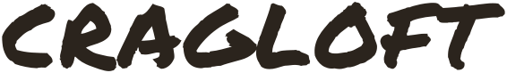

Honest about what would work
Honest about what would work and what would not. That honesty saved us a lot of money in our first quarter of selling bikes.
Felix Andersen-RuizCo-founder (Gearfinch)
Mosswick StudioCreative and marketing studio, Lowmere
Chapter 1
What Mosswick makes, and how it gets made.
Mosswick Studio is a creative and marketing studio of 32 people in Lowmere, founded in 2014. It shapes brands, builds websites, shoots films, makes social content and runs campaigns and paid media for brands such as Plumtide, Kilnmark, Paywren and Okra & Ash.
Strategists, designers, writers, filmmakers, developers and media buyers sit together and work on the same briefs, so a brand looks the same in a shop window and a feed.
The studio takes on a small number of new clients each year, from food brands to city charities, and most of them stay for years.
Every brand needs one idea it can say in a single breath.
Mosswick, what we believe
Workshops, customer interviews and a hard look at your market. Then a positioning and a voice your whole team can repeat.
Logos, type, colour and rules that work at every size, from a favicon to a building wrap. Since 2014 the studio has launched more than 140 brands.
Logo and wordmark · Brand guidelines · Templates
Fast, clear websites planned around what visitors need to decide, then written, built on a platform you can edit and tested on real phones.
Wireframes · UX and UI design · Copywriting · Development · CMS setup
Monthly content built around a few strong ideas, shot and edited in house and posted on a schedule. Each month we cut what did not work.
Short-form video · Photography · Monthly report
Brand films, product videos and animation, written, shot, edited and cut in house for every place they will run.
One idea carried well across outdoor, social, print and screen: the concept, the key visuals, the copy and the media plan, then adapted as we learn what people respond to.
Chapter 2
Twenty-six brands we have launched and looked after.

26 brands from the studio's client list, from Cairnstone to Voltmere.
Mosswick has 18 clients on monthly retainers today.
Chapter 3
Three clients, on why they stayed.
That honesty saved us a lot of money in our first quarter of selling bikes.
Honest about what would work and what would not. That honesty saved us a lot of money in our first quarter of selling bikes.
Felix Andersen-RuizCo-founder (Gearfinch)
The film crew turned up in the pouring rain, smiling. Months later, people still stop us at trade shows to talk about that campaign.
Jonas PellMarketing Director (Velloway)
We had eight weeks to open a restaurant with no name. They gave us a name on the door, a full booking diary and a lot less stress.
Cora Mbeki-LaneOwner (Okra & Ash)
Chapter 4
Three of the 32 people who make the work.
Founder and Creative Director
Ines reads every brief twice, then asks the question nobody wanted to answer. She started Mosswick in 2014 with two friends, at a desk above a bike shop.
Today she leads a studio of 32 and still runs the Thursday afternoon review, where work in progress goes up on the wall, rough edges and all.
Ines Calloway on LinkedInCo-founder and Strategy Director
Tobias turns messy workshops into one clear page that the whole client team signs. Every project starts with his week of listening.
He sits with sales teams, reads the complaints inbox and calls customers who almost did not buy.
Tobias Okonjo-Hale on LinkedInDesign Director
Mei Lin sketches fifty ideas on paper before she opens a laptop, and leads the studio's identity and packaging work.
She cares about the space between letters on a pack and the weight of a business card.
Mei Lin Draper on LinkedInTo start a project with Mosswick, call +1 555 0142 or write to projects@example.com.
Mosswick StudioBrands worth remembering. Marketing that pays back.Example content. Swap in your own.